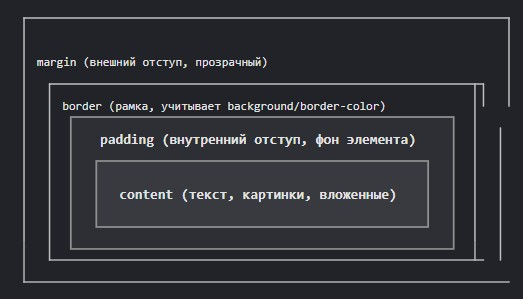

CSS — язык визуального слоя
CSS (Cascading Style Sheets) описывает, как выглядит HTML-разметка. HTML говорит «это заголовок», CSS говорит «этот заголовок — 32px, жирный, с отступом снизу 16px».
CSS отделяет содержание от представления. Один и тот же HTML можно оформить как светлую тему, тёмную тему или что угодно ещё — без изменения разметки.
Селекторы
Селектор — правило, которое указывает, к каким элементам применить стиль. Основные типы:
- По тегу.
p { color: #111; }— все абзацы. - По классу.
.card { border: 1px solid; }— все элементы с классом card. - По идентификатору.
#header { ... }— один уникальный элемент. - По атрибуту.
input[type="email"] { ... }. - Псевдоклассы.
a:hover { ... }— состояние наведения.
Каскад и специфичность
CSS — каскадные таблицы стилей. Если к элементу применяется несколько правил, побеждает то, у которого выше специфичность. Если специфичность равна — побеждает то, что написано ниже.
Порядок специфичности (от низкого к высокому):
- Тег:
p— 1 - Класс:
.card— 10 - ID:
#header— 100 - Инлайн-стиль:
style="..."— 1000
Не боритесь со специфичностью через !important. Если приходится — скорее всего, архитектура стилей сломана. Лучше использовать БЭМ или другой подход к именованию классов.
Блочная модель
Каждый элемент в CSS — прямоугольник, состоящий из четырёх слоёв: content (контент), padding (внутренний отступ), border (рамка), margin (внешний отступ).

По умолчанию box-sizing: content-box: width задаёт только ширину контента, а padding и border добавляются сверху. Это часто ломает макеты. Поэтому в современной вёрстке почти всегда используют:
Цвет, фон, границы
Цвет задаётся разными способами: HEX (#4ade80), RGB, HSL, именованные цвета. Для рекламных сайтов важно соблюдать контраст (WCAG 4.5:1 для текста).
- color. Цвет текста.
- background. Фон: цвет, изображение, градиент.
- border. Рамка: толщина, стиль, цвет.
- border-radius. Скругление углов.
- box-shadow. Тень.
Типографика через CSS
Основные свойства для работы с текстом:
- font-family. Гарнитура (системные шрифты или веб-шрифты).
- font-size. Размер (минимум 16px для основного текста).
- font-weight. Насыщенность (400 — обычный, 700 — жирный).
- line-height. Межстрочный интервал (1.4–1.6 для читаемости).
- letter-spacing. Межбуквенное расстояние.
- text-align. Выравнивание текста.
Понимание CSS позволяет дизайнеру говорить с разработчиком на одном языке. А ещё — быстро вносить правки в готовый лендинг: поменять цвет кнопки, поправить отступ, увеличить заголовок.
Итог
CSS — язык визуального слоя. Селекторы определяют, к чему применять стили, каскад и специфичность решают конфликты, блочная модель задаёт геометрию, а свойства цвета и типографики — внешний вид. Без понимания этих основ невозможно ни спроектировать макет, который легко верстается, ни собрать его самостоятельно.